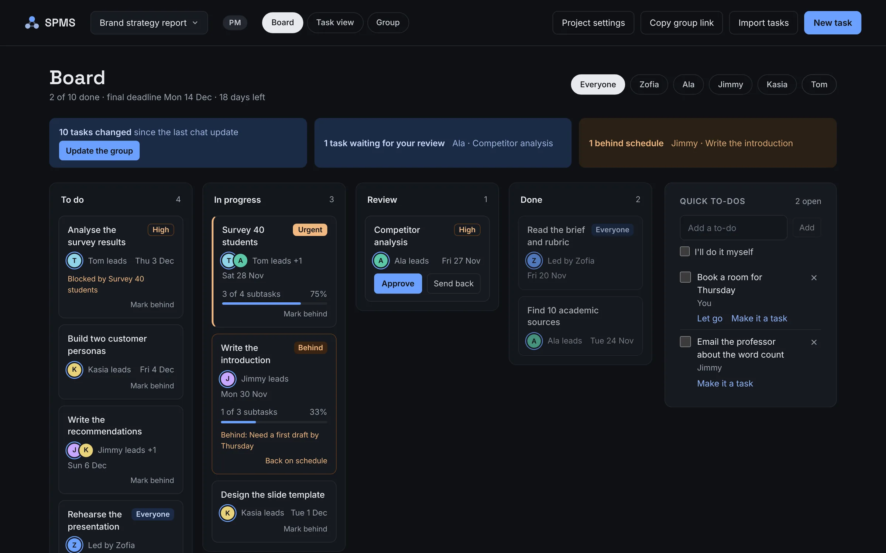
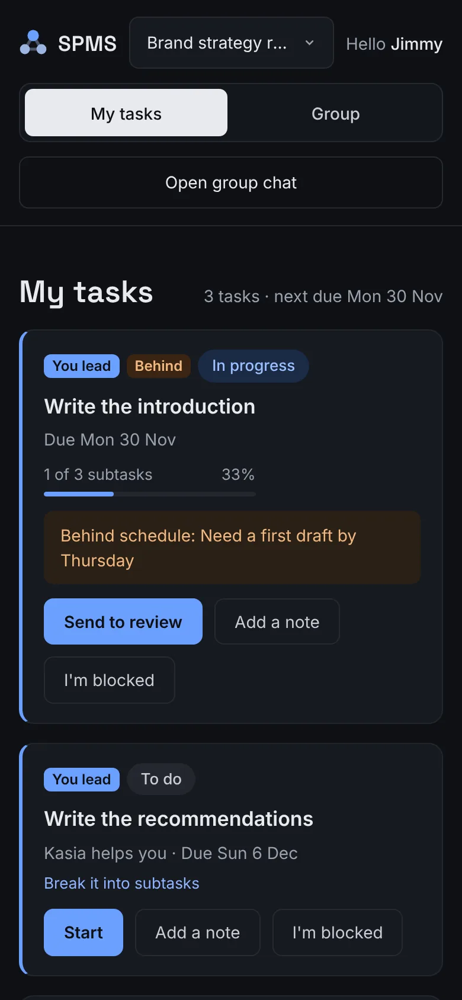
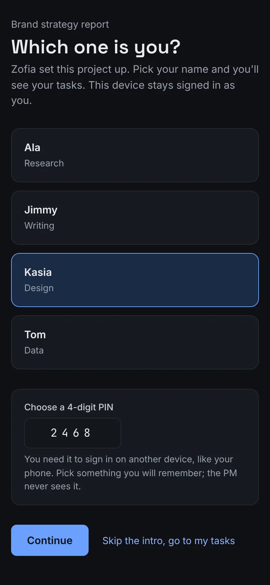
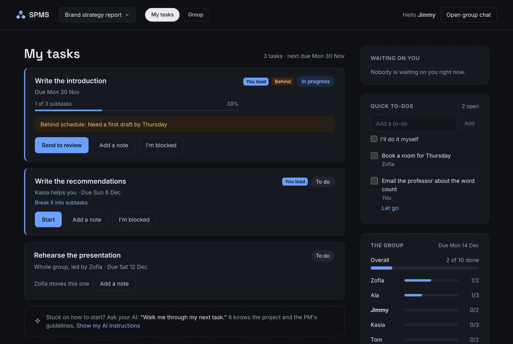
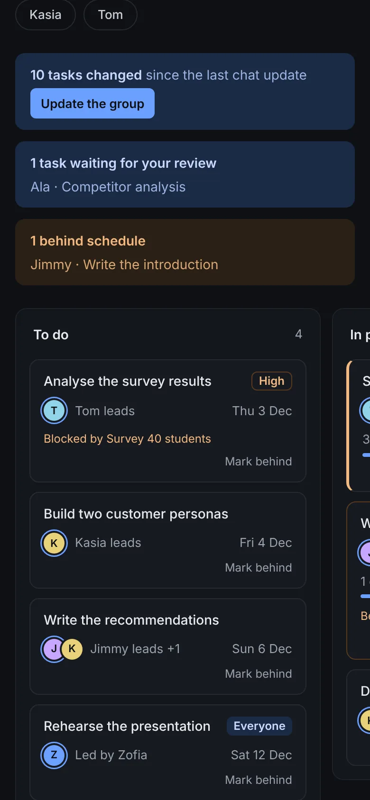
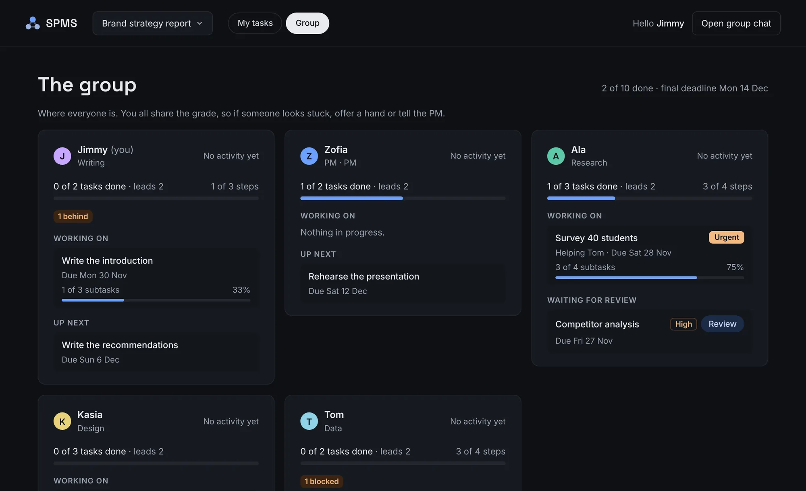
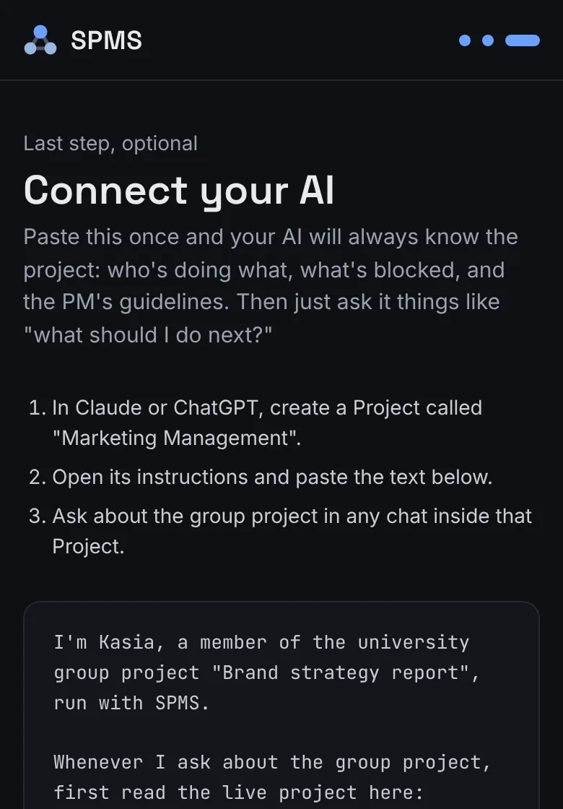
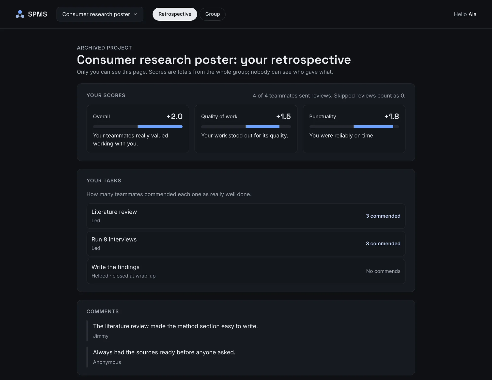
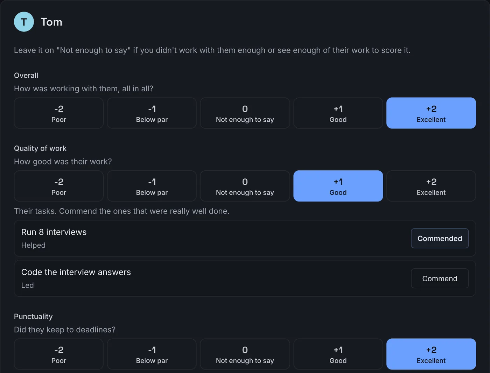

Group projects that actually get done.
One board for the whole group. Everyone knows what they own, what's due, and who they're waiting on. No more chasing people in the group chat the night before the deadline.
- Free and open source
- No accounts for members
- Works on your phone


Sound familiar?
Forty messages later, two people wrote it and nobody did the conclusion.
Silent for two weeks, then "sorry, what do I need to do?" the day before it's due.
Everyone gets the same grade, but only one person knows where things stand.
SPMS gives every task one owner, a date and a status the whole group can see.
Set up in about 10 minutes. Join in 10 seconds.
- One person sets it up as the project manager A free PocketBase Cloud instance holds your group's data. The setup guide walks you through it, or hands the steps to Claude or ChatGPT to walk you through.
- Post one link in the group chat Add your teammates' names, plan the tasks (or import a plan your AI wrote), and share the group link.
- Everyone picks their name and a 4-digit PIN No sign-up, no email, no app to install. The PIN lets them sign in on their phone too.

Open it and see exactly what to do next.
My tasks shows only your work, in order, with the most urgent first. Start a task, break it into subtasks, send it to review when you're done.
- Blockers are visible. If you're waiting on someone's research, you see it. Stuck? Press "I'm blocked" and the PM knows.
- Every task has a lead. Helpers can join in, but one person owns it, so nothing falls between two people.
- Quick to-dos for small things like booking a room or emailing the professor.

Run the project without nagging anyone.
The board shows the whole project at a glance. Approve finished work or send it back with a note, set priorities, and mark tasks behind schedule with a reason.
- One tap to update the group chat. SPMS writes the summary of what changed and can post it to Teams, Discord or Slack.
- Swipe through the board on your phone, one column at a time.
- Import a whole plan written with your AI instead of typing every task.

You share the grade, so share the picture.
The Group page shows where everyone is: what they're working on, what's next, and who's behind or blocked. If someone looks stuck, you can offer a hand before it becomes a problem.

Your AI already knows the project.
Paste one prompt into a Claude or ChatGPT Project and your AI reads the live project: your tasks, the deadlines, what's blocked and the PM's guidelines. Then just ask "what should I do next?" or "walk me through my next task".
It reads the project only. It can't change anything.

An honest retrospective, without the awkwardness.
When the PM wraps up, everyone can review everyone, the PM included: overall, quality of work and punctuality, plus a commend for tasks that were really well done.
- Private by design. Individual scores are never stored. You only ever see your own totals, never who gave what.
- Comments are anonymous unless you choose to sign them.
- The project is archived, read-only, with how the work was divided, for every member to keep.


Everything a student group needs. Nothing it doesn't.
0 PLN. For the whole group.
SPMS is free and open source. It runs on PocketBase Cloud's free plan, so there's nothing to pay, no trial and no card to enter.
Questions
Do my teammates need to create an account?
No. They open the group link, pick their name and choose a 4-digit PIN. Only the project manager sets anything up.
How big can the group be?
It's built for groups of 3 to 7, the usual size for university projects. A group can have more than one PM.
Who can see the retrospective scores?
Only the person they're about, and only as totals from the whole group. Individual scores are never stored, so not even the PM can see who gave what. The PM only sees feedback about themselves.
Where is our data kept?
In your group's own PocketBase instance, set up by your PM. SPMS has no central server collecting it.
Does it work on a phone?
Yes. Members and PMs can do everything from a phone browser, and the PM's board swipes sideways one column at a time.
Which AI does the AI link work with?
Claude and ChatGPT both work. You paste one prompt into a Project there, and the AI reads your live project whenever you ask about it.
Your next group project starts soon.
Set it up once, share one link, and spend the semester on the work instead of the chasing.